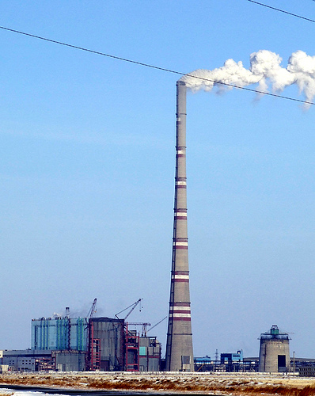

Bogatyr Mine has a Guinnes World Record as the biggest open-cast mine in the world.
GRES-2 has a Guinnes World Record for the tallest reinforced concrete chimney.

Zhylanbayev Marat Tolegenovich is the only man of the Planet, who alone ran the largest deserts of Asia, Africa, Australia and America. He is a marathoner and a master of sports of international class. Moreover, he is from my
town :).
According to el.kz, Marat is the only person in our Planet, who alone ran the largest deserts of the Earth such as Karakum, Sahara, Great Victoria and Nevada.
The longest distance which Marat had run was 1700 kilometers within 24 days through the Sahara Desert (70 kilometers a day).
All 7 records of Marat were registered in the Guinness book of records.